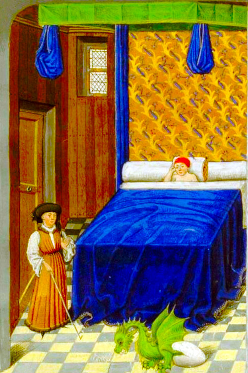
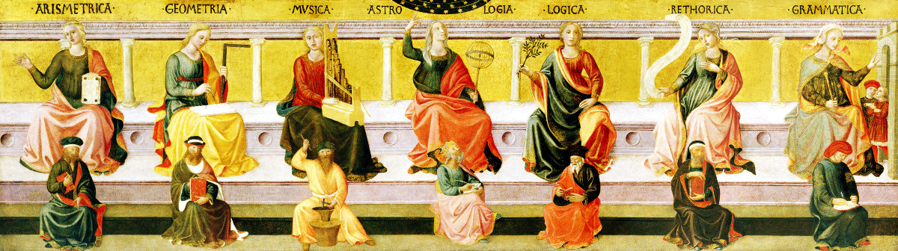

Astrology, Medicine and Hermetism
Ever since ancient times, Hermetism, and especially its astrological part, has been applied to many fields of human endeavour, most significantly medicine. This section investigates what these originally were at their fullest and most elaborate extent. There is no doubt that medicine constitutes the largest part of applied Hermetism and very likely the reason that astrological techniques were kept alive for so many centuries.In the middle ages, especially at the University of Bologna, education consisted of two stages or levels of learning that which was known as the seven liberal arts. The first and lower level was known as the Trivium, which were concerned with The Book of Man, whereby the advanced and upper level was called the Quadrivium, and regarded The Book of Nature.
The trivium, a word coined to imitate the name of the earlier formed quadrivium, set the pace for education by supplying the necessary basic knowledge of grammar, logic, and rhetoric. Once mastered, a student could proceed to the quadrivium to study the advanced subjects mentioned in Plato's Republic as Arithmetic, Music, Geometry and Astronomy/Astrology. These subjects were all of a mathematical nature, with Arithmetic concerning numbers as abstract concepts, Music as numbers in time, Geometry as numbers in space, and Astronomy/Astrology as numbers in space and time.

The Seven Liberal Arts
L-R: arithmetic, geometry, music, astrology (in the center), logic, rhetoric, grammar. (c.1450, by Francesco di Stefano Pesellino (1422-1457), "Septem artes liberales").
L-R: arithmetic, geometry, music, astrology (in the center), logic, rhetoric, grammar. (c.1450, by Francesco di Stefano Pesellino (1422-1457), "Septem artes liberales").
|
The seven liberal arts correspond to the seven traditional planets, as shown here, together with some inclusions from Robert Zoller's translation of Alkindi’s "On the Stellar Rays": | ||
| Planet | Liberal Art | Robert Zoller's Inclusions |
| Trivium | ||
| Moon | Grammar | Incantation |
| Mercury | Logic | Laws of Nature |
| Venus | Rhetoric | Enchantment |
| Quadrivium | ||
| Sun | Arithmetic | Number Magic & Gematria |
| Mars | Music | Orphic or Davidic Psaltery |
| Jupiter | Geometry | Sigils and Figures |
| Saturn | Astronomy | Astrology and its Images |
As can be seen, medicine was not taught as part of the liberal arts and astrological medicine was a part of astrology, rather than astrology being a part of medicine, as is nowadays claimed.
A brief mention should be made about what happened to the Hermetic sciences and why they are no longer central to human endeavour. Firstly, the modern world which began in the cradle of modern science, was at the time struggling with religious ideas and fought their battle by declaring all mainstream ideas, which were intertwined with Hermetism, to be rooted in magic and superstition, and therefore bad.
Everything was then taken over into modern science by reduction or rationalisation into 'scientific' disciplines, renaming them along the way. As a result, magic became physics and alchemy became chemistry. Because astrological medicine was such a broad subject involving many varied fields, it was converted into biology, botany, diagnostics, surgery, pharmacy, medical theory and research as well as large scale agriculture of medicinal plants.
To make things somewhat clearer, when the term 'magic' is used here, it refers to the intentional manipulation of the physical world by often employing unseen agencies or forces. How this differs from alchemy, is that magic more often than not, goes beyond the boundaries of just physical matter, with the intention of also altering the course of events. Within the framework of medicine, alchemy usually produces medicines to be administered to the patient, whereas magic intends to alter the patient or sickness by supernatural intervention, using particular spells, amulets, incantations and so on. Much of this was developed in the Arab world which inherited its knowledge from the ancient Greeks and Romans and carried its learning into Europe.
What could be more magical or miraculous than a pharmaceutical drug and its invisible actions manifesting effects within and without a patient? The difference in the modern world is the naming of the phenomenon and not the phenomenon itself. The idea and method for modern drugs comes straight out of the »Hermetic Spagyrics of »Paracelsus (explained later) but he doesn't get the credit for being a scientist because he didn't use recent scientifically acceptable language. This is strange indeed but this type of hijacking of ideas is part of modern science.
Naturally enough, it stands to reason, that 'magic' as a Hermetic Science, probably doesn't work in the way it is claimed or described. Nevertheless it is intriguing that Hermetism has been around for thousands of years and as some say, there must be something to it, otherwise it would have disappeared like so many other things from the ancient world. The approach here, is to say what it was, and is, and leave it up to each individual to make personal judgements.
Astrological Medicine
As a Hermetic Science, Astrological Medicine encompasses a number of fields of human endeavour, including iatromathematika, melothesia, spagyric, rhizomatoi and (occult) botany especially in the form of herbalism. These fields of study have since been pushed into the realms of esoterics, occultism or superstition, mainly because their effects are regarded by self-styled authorities, erroneously, as 'beliefs' which don't belong to any recognised religion. Giulio Campagnola, The Astrologer (l'astrologo), 1590,
Campagnola (1482-1515) was an engraver who invented stippling to create elaborate shading in his works. (this version was artificially colored)
Giulio Campagnola, The Astrologer (l'astrologo), 1590,
Campagnola (1482-1515) was an engraver who invented stippling to create elaborate shading in his works. (this version was artificially colored)
These concepts stem from ancient Gnosticism (literally meaning 'knowing'), which although is not a religion, has always threatened Christianity, at its core, as being its suppressed source of religious ideas. The central theme of Gnosticism is that the world and everything in it is purely evil and it is the duty of an enlightened person to break free from physical existence and ascend to the heavenly realm. Sickness, in this framework, is held to be caused by possession from evil demons, notably of a planetary nature. Nowadays, those demons are 'known' as diseases, and have medical names.
Jacob's Ladder by William Blake portrays the steps to heaven
This idea is very different from that of Hermetic Philosophy which regards the Creation as Divine and Good (an idea which was partially absorbed into Christianity). Rather than blindly accepting one's lot, Hermetism concentrates on improving personal experiences in the current and real world by elevating spirituality towards the Divine in this life and not the next. Unfortunately, this idea was shunned by Christianity in favour of encompassing the Gnostic salvation after death.
Unluckily for Hermetism, it was hijacked early in its career by scribes sympathetic to Gnosticism, well before the Common Era (that is, BC or BCE). They wittingly modified the Hermetic texts to align with their own version of Gnosticism, especially that of the world being evil. The result was that some later texts, which are now claimed to be Hermetic, describe an aim of ascending to heaven through the 'planetary spheres', thereby escaping the evil. This was added to both Gnosticism and Hermetism by embracing kabbalistic concepts for an already existing audience.
The following quote about the Hermetic Logos and Nous, from Andre-Jean Festugiere (15.03.1898-13.08.1982), a French Christian friar, historian and philologist, who also translated the Corpus Hermeticum, is an example of how Hermetism can be confused with Gnosticism :
For even in man (the highest of the animals), the rational soul [personal logos} is still bound up with the body and dependent on matter. All the processes of the reason [logos] help one not one whit to make the ascent towards God. "Those who failed to hear the Divine Proclamation," says one of the Hermetic writers, "are those who possess the logos only, but have not received also the nous" that is, the faculty of mystical intuition; . . . "these men know not for what purpose they have been made, and by whom they have been made". The entire spiritual quest therefore will consist in gathering together one's faculties within oneself, in ridding oneself of all images and all thoughts, in living in a state of pure passivity in
which one hopes, in the end, to find God.
("Personal Religion Among The Greeks", p132)
And Elaine Pagels commented on the problem of "gnosis" or "knowing":
[Valentinus] believed, one could progress beyond faith to understanding, that is, to gnosis. This word is often translated into "knowledge", but the translation is somewhat misleading, since gnosis differs from intellectual knowledge (as in phrases like "they know mathematics"), which is characterized in Greek by the word eidein (from which we derive the English word idea).
English is unusual within its language group in having only one verb ("to know") to express different kinds of knowing. Modern European languages use one word to characterize intellectual knowledge and another for the knowledge of personal relationships: French, for example, distinguishes between savoir and connaître, Spanish between saber and conocer, Italian between sapere and conoscere, German between wissen and kennen. The Greek word gignosko, from which gnosis derives, refers to the knowledge of personal relationships (as in "We know Christ" or, in the words of the Delphic oracle, "Know thyself"). The term might better be translated as "insight", or "wisdom".
One Gnostic teacher [Hippolytus in "Refutation of All Heresies"] encourages his students to seek gnosis within themselves:
(from Elaine Pagels, "The Origin of Satan", 1995)
English is unusual within its language group in having only one verb ("to know") to express different kinds of knowing. Modern European languages use one word to characterize intellectual knowledge and another for the knowledge of personal relationships: French, for example, distinguishes between savoir and connaître, Spanish between saber and conocer, Italian between sapere and conoscere, German between wissen and kennen. The Greek word gignosko, from which gnosis derives, refers to the knowledge of personal relationships (as in "We know Christ" or, in the words of the Delphic oracle, "Know thyself"). The term might better be translated as "insight", or "wisdom".
One Gnostic teacher [Hippolytus in "Refutation of All Heresies"] encourages his students to seek gnosis within themselves:
"Abandon the search for God, and creation, and similar things of that kind. Instead, take yourself as the starting place. Ask who it is within you who makes everything his own saying,
“my mind,” “my heart,” “my God.” Learn the sources of love, joy, hate, and desire. . . . If you carefully examine all these things, you will find [God] in yourself".
 An example of a Bat Book which was used in astrological medicine as a lookup table to inform a doctor of the best time to administer medicine.
An example of a Bat Book which was used in astrological medicine as a lookup table to inform a doctor of the best time to administer medicine.
Medical Astrologers, The Iatromathematicians
Medical astrologers or Iatromathematika (from Greek ἰατρική , "medical" and μαθηματικά, "mathematics", therefore meaning those who astrologically calculate medical issues), were doctors, physicians or medical practitioners who applied the astrological correspondences to the parts of the human body, called »"Melothesia", to investigate disease and discover remedies. Up until the advent of science, this was mainstream state of the art medicine. In English, Iatromathematika has its earliest usage in 1647, with the publication of Christian Astrology by the astrologer William Lilly. This work contains a lot of material about Medical Astrology, especially within the framework of Hermetic Philosophy.The medical astrologer employed a number of techniques starting with setting up charts for the client's time of birth and the time of the start of the sickness, called the decumbiture, usually when the patient first took to bed. The birth chart indicated the propensity for particular disorders, while the chart of the decumbiture encompassed the characteristics of the current ailments as well as possible treatments. Further charts could be implemented to determine transits, directions and progressions to anticipate the course of an illness.
Within the framework of regular allopathic "Galenic/Hippocratic" medicine inherited from ancient Greece and Rome, much attention was paid to the doctrine of the four humours of the human body. The word humour is a translation of Greek word chymos (χυμός", literally meaning 'juice' or 'sap', metaphorically 'flavor'). It is unclear as to whether Hermetic Medical Astrologers were equally enthusiastic about the idea.
 The Four Humours
The Four Humours
The doctrine of the four humours led to a corresponding understanding of the four temperaments, also from Hippocrates, which affected human behaviour and personality. These types supposedly related to the outer appearance of a dominant or excessive humour. These in turn, being entrenched in astrology, were allied to the four elements and the four seasons:
| Humour | Temperament | Element | Qualities | Season |
| Phlegm | Phlegmatic | Water | cold & wet | Winter |
| Blood | Sanguine | Air | hot & wet | Spring |
| Yellow Bile | Choleric | Fire | hot & dry | Summer |
| Black Bile | Melancholic | Earth | cold & dry | Autumn |
It was Paracelsus who said in 1538 that:
"All things are poison, and nothing is without poison; the dosage alone makes it so a thing is not a poison."
(Alle Dinge sind Gift, und nichts ist ohne Gift; allein die Dosis macht, dass ein Ding kein Gift ist.).
(Alle Dinge sind Gift, und nichts ist ohne Gift; allein die Dosis macht, dass ein Ding kein Gift ist.).
In Writing
Paracelsus himself, avoided the word astrology in his numerous writings, perhaps to distance his work from the mainstream astrological medicine. Instead, when he wrote about influences from the heavens, he used the term "Astral" and urged Practitioners to know everything about "Astronomey" for timing of events. This is undestandable as he was more of an alchemist than an astrologer. To historians, this has brought about some misunderstanding regarding Hermetic texts which are only considered to be astrological if a chart was drawn and predictions were made. The Paracelsians, as the followers of Paracelsus, continued to publish his works, including translations into other languages such as Dutch, German, French, Latin and English, as well as penning new works attributed to Paracelsus, likely in the same manner as was done with Hermes Trismegistus.

Melothesia
The word "Melothesia" (Greek: μελοθεσία) stems from the ancient assignment of astrological symbolism to the human body. It was extant in Greco-Roman astral science and based on the doctrine of sympathy between the cosmos as macrocosm, mirroring the human as microcosm. Body parts were assigned to zodiacal signs and the internal organs mostly to planets.| Zodiac Sign | Body Region | Body Parts / Organs |
| Aries | head | eyes, nose, ears, mouth, etc. |
| Taurus | neck | throat |
| Gemini | shoulder, armpits, arms | hands, fingers |
| Cancer | chest area | spleen, lungs, ribs |
| Leo | abdominal area | heart, back, sides |
| Virgo | stomach | intestines |
| Libra | navel, loins, buttocks | kidneys |
| Scorpio | pubic region | uterus, penis |
| Sagittarius | hips, thighs | |
| Capricorn | knees | kneecaps |
| Aquarius | calves, shins | |
| Pisces | feet | toes, soles, heels |
| Planet | Corresponding Body-Parts |
| Moon | sense of taste, stomach, abdomen, uterus, left side of the body |
| Mercury | speech and thought, tongue, gall, buttocks |
| Venus | sense of smell, liver, fleshy parts |
| Sun | sight, brain, heart, tendons, right side of the body |
| Mars | left ear, kidneys, veins, genitals |
| Jupiter | sense of touch, lungs, arteries, semen |
| Saturn | right ear, spleen, bladder, mucus, bones |
Phytognomonica by Giambattista della Porta (1588)
(scroll to read more)
(scroll to read more)
The Doctrine of Signatures
As an extension of the concept of Melothesia concerning astrological correspondences to the human body, the doctrine of signatures relates things in Nature to each other.Since this begins as a rather personal story, I will start to tell it in the first person.
When I was a young and naive student of astrology, I eagerly read through many lists of books available on the subject in an effort to gain more knowledge. One title in particular piqued my curiosity. It was listed as "Plants and Human Behaviour" and I couldn't wait to discover what the author could tell me about it. I quickly ordered it per post, but upon arrival I was quite puzzled to find out that a typo (typographical error) had crept into the book list. The title which landed on my doorstep was actually called "The Planets and Human Behaviour", by Jeff Mayo, naturally enough, being a book by an astrologer, on astrology.
Many years later I came across what was called The Doctrine of Signatures which, to my surprise picked up where my curiosity had left off. According to this doctrine, plants and humans share a common cosmological ancestor which imprinted a particular character upon them. It also said that plants can affect humans dramatically. Strangely, it also stated that the planets shared in that same cosmological origin.
More recently, it has come to my attention that all of these things have something else in common. They belong to Hermetism and its Cosmology. In there, it is stated that everything in existence was created from the same basic raw matter and upon their coming into being share commonalities. These recognisable similarities form the basis for the signatures, which are to be found within (and 'without') anything.
There are also astrological correspondences to the human hand
The key to understanding this is the concept of macrocosm and microcosm. The Hermetic Cosmos, above and beyond our Earth, is the macrocosm and parallels Nature on Earth as the microcosm, sometimes referred to as the sub-lunary realm. So a planet, in astrology which also stems from the same cosmic source, has a particular character. Likewise, in the doctrine of signatures, things in nature have a particular characters. So does an illness, which is where the doctrine has particularly been helpful for millennia.
This is all part of astrological medicine and tells the practitioner how to recognise plant remedies available in the world of nature which can provide a source for treatment. There have been many proponents of this idea, supposedly starting with the fathers of medicine, Dioscorides (c.40–90 CE) and Galen (129–216 CE). It was further widely spread and popularised by the writings of the Swiss physician Paracelsus (1493–1541), the Italian polymath, Giambattista della Porta (1535-1615) and the German philosopher and mystic, Jakob Böhme (1575–1624).
Unfortunately, as with most Hermetic ideas, confusion has arisen. One critic complained that Paracelsus said, to discover signatures, all one had to do was to read nature like a book, but he didn't say how to perform the task. This has lead to a surprising array of claims that a plant signature is the same as its shape. Obviously this has tickled the fancies of many advocates and opponents ever since, who then go on to say, that is not only nonsense but dangerous.
Getting back to the doctrine of signatures, one of the most sensible reactions was from the inventor, or should we say, developer of Homeopathy, Samuel Hahnemann (10.04.1755-02.07.1843) who said:
"that which can produce a set of symptoms in a healthy individual, can treat a sick individual
who is manifesting a similar set of symptoms."
This led him to the principle, "like cures like". To this end, Hahnemann sent out his voluntary assistents into the field to try a variety of substances, mostly of plant origin, and report back what sorts of symptoms were produced. This formed the basis of Hahnemann's main remedies.
who is manifesting a similar set of symptoms."
Diagnosis and Prognosis
Medicine is based upon two stages. The first is discovering what is ailing the patient. This entails a diagnosis, looking at physical characteristics and whatever else that will aid in an assessment. The second stage is find an appropriate treatment and what to expect when considering the course of an illness such as the duration, action and outcome. This is known as the prognosis.Not much has changed over the centuries as is revealed by the following excerpt
from the early medieval manuscript Monte Cassino MS. 97 (Latin, Italy):
How you should visit the patient
You should not visit every patient in the same way, but if you listen to all of this, you shall learn. As soon as you approach the patient, ask him if perchance he is in pain. And if he says that he is, ask if the pain is strong or not and persistent or not. Afterwards feel his pulse and see if he has a fever or not. If he is in pain, feel his pulse, which will be fluid and rapid. And ask him if the pain comes when he is cold; also if he is wakeful. And ask if the wakefulness is due to this illness, or to some other activity, and if his bowels and urine are normal. And inspect both parts, and see if there be some danger to him . . . ask about the onset of the illness, and about what the other physicians who visited him said, and whether they all said the same thing or not. And enquire concerning the condition of the body, whether it is cold or the like, whether the bowels are loose, sleep interrupted, and if the disease is persistent, and if he has ever had such ailments before. When you have enquired into all these things, it will be easy for you to discern the causes [facile eius causas agnoscis] and the cure will not seem difficult for you.
from: Faith Wallis - Signs and Senses. Diagnosis and Prognosis in Early Medieval Pulse and Urine Texts,You should not visit every patient in the same way, but if you listen to all of this, you shall learn. As soon as you approach the patient, ask him if perchance he is in pain. And if he says that he is, ask if the pain is strong or not and persistent or not. Afterwards feel his pulse and see if he has a fever or not. If he is in pain, feel his pulse, which will be fluid and rapid. And ask him if the pain comes when he is cold; also if he is wakeful. And ask if the wakefulness is due to this illness, or to some other activity, and if his bowels and urine are normal. And inspect both parts, and see if there be some danger to him . . . ask about the onset of the illness, and about what the other physicians who visited him said, and whether they all said the same thing or not. And enquire concerning the condition of the body, whether it is cold or the like, whether the bowels are loose, sleep interrupted, and if the disease is persistent, and if he has ever had such ailments before. When you have enquired into all these things, it will be easy for you to discern the causes [facile eius causas agnoscis] and the cure will not seem difficult for you.
in The Society for the Social History of Medicine, 2000, pp265-278
Where diagnosis becomes interesting, is by the inclusion of astrological techniques. Charts, signs, planets, aspects, transits and various other data reveal a wealth of information for the practitioner.
As an example, » Dr. Cornell's Encyclopedia of Medical Astrology introduces 3 lengthy sections (10 pages) about Mars:
MARS - The Red Planet, and known as "The God of War". In size Mars is smaller than the Earth. Mars is, perhaps, the most written about Planet in Astrological Literature, and has more to do with human ills than any other planet, and creates more disturbances in human affairs by his afflictions than any other planet. However, Mars has a good and powerful influence also, and along with the Sun is constructive, gives energy, heat, and force to the body, as well as courage and stimulus to the mind. For convenience of reference this Article is arranged in three Sections. Section One, about the General Influences of Mars; Section Two, what Mars Rules, and Section Three, the Diseases and Afflictions of Mars.
Elements and the Matter of the Human Body
According to Hermetic philosophy, everything is made up of the four elements, fire, air, water and earth.
Modern science has "found" that:
The human body is almost completely consists of oxygen, hydrogen, nitrogen and carbon,
whereby these total 96%, by mass and 99%, by number of atoms.
If this is correlated to the four traditional elements:
| traditional element |
chemical element |
by mass in human body |
by atoms in human body |
amount in atmosphere |
| fire | nitrogen | 3% | 1% | 78% |
| air | oxygen | 65% | 24% | 21% |
| water | hydrogen | 10% | 62% | |
| earth | carbon | 18% | 12% | |
| = 96% | = 99% | = 99% |
understanding of the elemental composition of the human body, the microcosm.
Hermetic Medicines Involving Astrology
 Paracelsus and his Spagyric
Paracelsus and his Spagyric
Spagyrics
The term Spagyric is taken to be from the Late Latin word, spagyricus from the Ancient Greek verbs, spán (σπᾶν, "to draw" or " to pull") and ageírein (ἀγείρειν, "to assemble"). In our case this means to draw together essential quintessences in a manner that enables the assembly of a medicine. It is often synonymous with alchemic or iatrochemical. Spagyric is in essence the Hermetically alchemical preparation of medicines. It was Paracelsus (c.1493–24.09.1541), who coined the term spagyric and also applied this healing method in practice. Spagyric is firmly entrenched in Hermetism, especially in the way that Paracelsus understood the Hermetic philosophical principles and how he applied them to his technical application.The way that Spagyric works is to reproduce the mechanisms of Universal Generation through the first and second causes. Everything is comprised of matter and spirit and it is the spirit part that is locked up in the matter. Important for Spagyric to work, the spirit part needs to be extracted in such a manner as to ensure that it reaches its maximum virtue. Freeing the spirit from matter requires that it first be exalted, whereby it is matured and ripened, allowing it to evolve through an alchemical process called putrefaction. This acts in a similar manner to a seed breaking down in the ground providing nutrient necessary for germination and new growth.
In Hermetic herbalism or in the mineral kingdom, for this to be successful, it is essential for a practitioner to know the nature of both elemental and astral influences. It is also necessary to know what these influences produce and equally understand what causes could modify those influences. All of this happens within the framework of interaction between macrocosm and microcosm, so that also plays a large part in the overall process. Out of the process of the putrefaction of matter, the spirit is allowed to be purified by freeing it from its earthly prison.
The entire physical side of spagyric is concerned with this separation, or extraction, of the spirit, in order to produce intended quintessences. Since spagyric preparations are in accordance with the mechanisms of Universal Generation, the quintessences produced are readily assimilable by the human organism, thereby being more effective than allopathic medicines. The process is altogether simple, grand and subtle. It is simple in that it follows natural processes, grand as it represents the process of creation and subtle because it defies human comprehension.
An Antidotary, 1461,
Bernardi de Gordonio
Bernardi de Gordonio
Rhizomatoi, Herbaria, Taberna, Antidotaria and Unguentaria
The medicinal nature of plants has been known since ancient times. The addition of astrological observations and symbolism into the timing of collection, preparation and administering of herbs and herbal medicines is part of the technical Hermetica, namely Hermetical Astrological Medicine.In ancient times medicines were prepared from plant, mineral and animal sources, yet by far the majority were from plants, having been known since the time of Hippocrates (c.460–c.370 BC). Those used for internal use consisted of the most common remedies such as powders, pills, decoctions, infusions, herbal teas, compound wines, vegetable juices and medicated oils, while those for external use were represented by ointments (unguents), salves (pomades), balms (balsams), waxes and lotions.
The raw materials for these preparations were usually fetched by professionals, in the field, so to speak. Necessarily, these experts needed to know their way around plants and be able to identify those which were sought after as well as knowing which was the best time to pick them according to the most favourable condition. More often than not this was determined astrologically, for instance by the position or phase of the moon. This practice is still maintained, by some, today.
Physician visiting an Apothecary, 1497, in "Buch der Chirurgia",
by Hieronymus Brunschwig
Earlier, medical practitioners, no matter how illustrious, went out into the fields and woods to collect their own medicinal plants. As demand grew and complexities in medications followed, specialists set themselves up in business. There was the Herbarium for herbs and herbal preparations, the Rhizomatoi dedicated to the sale of medicinal plant roots, and Tabernae as laboratories to prepare any sort of drug with their necessary equipment.
by Hieronymus Brunschwig
The Rhizomatoi were specialist "root-gatherers" who were the fore-runners of today's herbalists but with a magical twist. They collected all sorts of plant parts which were regarded as healing substances with the ultimate aim of selling them themselves or supplying apothecaries who could prepare them as drugs to dispense them for later administration. There was a huge resurgence of this art in Italy in the middle ages.
Since the majority of raw materials for the making of medicines came from plants, the term "Plantae Officinalis" was employed to state which particular plants were for medicinal use. The term "Officinalis" in this sense originally referred to the medical plant store of a monastery and was later used as an adjunct to the name of a plant to denote that it was a medicine or food. The term was adopted by Carl Linnaeus (23.05.1707–10.01.1778), for his "Latin Names" (binomial nomenclature) to refer to medical or culinary plants as opposed to "Vulgarus", meaning "common", especially for plants ocurring in the wild.
Taberna herbaria (Herb Tavern)
Further along the line, such was the spread of medications in the ancient Roman world, Unguent Taverns (Unguentaria Tabernae) were set up to specialise in the preparation of ointments. The preparatory pharmacists were called Ointment Dispensaries (Unguentarii). As well as that, there were Herbal Taverns (Taberna herbaria) for the sale of medicines, compresses, poultices, decoctions and herbal teas. These all served as part of the folk medicine, which set itself apart from the doctors.
Eventually, these places were all controlled by laws in order to protect the new scientific approach to medicines. The Taberna changed into an apothecary (modern "Apotheke" in German). The herbalist turned into a pharmacist. The root-gatherer became the druggist (the word drug coming from the Middle Low German word droge "trocken", referring to dried roots and herbs).
Magical Hermetic Healing with Azoth, Alkahest and Philosopher's Stone
Many paths of medicine, especially in the middle ages were influenced by Arabic magic and alchemy. As such, the sideline of Alchemical cures were intermingled with miracles and magic. The ultimate aim was often to create a panacea, a cure-all substance which could be used as a pathway to health or immortality. These substances were more often than not, referred to in Alchemy as Universal Solvents. The recipes for preparing these were, naturally enough, top-secret.
Azoth
(from Basil Valentine)
(from Basil Valentine)
German alchemist Hennig Brand discovered phosphorus while trying to make gold from urine
Philosopher's StoneThe Philosopher's Stone is undoubtedly the most famous of the magical substances. It has become the stuff of legends and myths, such as the immortality of the alchemist, Nicholas Flamel, which has since been proven to be untrue. The stone is regarded as having the power to transform lead into gold or mercury into silver, act as a universal elixir bringing about rejuvination or eternal life. Its creation is the most treasured aim of the alchemist.
Azoth
The word azoth can be traced back to the medieval Latin word azoc from the Arabic al-za'buq (الزئبق), meaning 'the mercury.' Azoth was mentioned in many ancient alchemical texts as the animating spirit in all matter. Once extracted, it could be used to gain access to the essence of other substances. Within the context of magic throughout the Renaissance, it was related to spiritual enlightenment, purification of the soul and elevated states of consciousness. This in turn influenced Hermetic and esoteric schools of thought. There is a great likelihood that Paracelsus modelled his philosophical Mercury of the Tria prima on azoth.
Alkahest
Alkahest, a word of uncertain origin, is another of the alchemical recipes for a panacea. Paracelsus had his own recipe for alkahest consisting of alcohol, caustic lime, and carbonate of potash, although the result of the recipe was not intended to be a "universal solvent". Instead he claimed it helped with liver failure by being a substitute for its functions.
Dissolve and Bind
The alchemical maxim from Maria Prophetissa which dates back to antiquity expresses the importance of a solvent:
Dissolve and bind, and you will have mastered the process, obtained the
miraculous masterpiece (Solve et coagula, et habebis magisterium).
miraculous masterpiece (Solve et coagula, et habebis magisterium).
 The Cadeceus,
The Cadeceus, the winged staff
of Hermes
 Rod of Asclepius
Rod of Asclepiussymbolising medicine
b Mercury
A Roman coin from the year 74 CE depicting a Cadeceus which resembles the sigil for MercuryThe Rod of Asclepius and The Cadeceus
To talk about Hermetic medicine would not be complete without a mention of the Egyptian, Greek and Roman gods. Although similar, there were two gods of medicine, Asclepius and Hermes who carried with them magic wands entwined by snakes, but having different myths and legends surrounding them.Asclepius, the ancient Greek god of healing and medicine, was depicted as holding a staff or rod, which itself came to symbolise healing. Asclepius is also the name of one of the Philosophical Hermetic treatises, as well as being the name of a prominent character in Hermetic dialogues. To make things even more complicated, Hermes Trismegistus is often attributed with being the inventor of Hermetic Medicine.
 In 1902, the U.S. miltary mistakenly assumed that the Cadeceus with two snakes was the symbol of medicine, while it should have been the Rod of Asclepius with only one snake
In 1902, the U.S. miltary mistakenly assumed that the Cadeceus with two snakes was the symbol of medicine, while it should have been the Rod of Asclepius with only one snake
The Cadeceus was the original symbol for Mercury and the modern astrological sigil is based upon it. According to legend, the Cadeceus, had magical powers. "The wand of Mercury was endowed with such virtues that whoever it touched, if asleep, would start up into life and alacrity, and, if awake, would immediately fall into a profound sleep. When it touched the dying, their souls gently parted from their mortal frame ; and, when it was applied to the dead, the dead returned to life." (William Godwin, "Lives of the Necromancers" 1876, p37).
About
Hi, my name is Rod Schneider and I have created this website to illustrate how, with the help of astrology, that negativity can be converted into something more positive. The astrology being shown here is rooted in the most ancient inceptions derived from Hermetism. It is technical but in the hands of a practitioner already familiar with astrology has great potential to be helpful. There is also much help for non-astrologers to use astrology in a different manner, namely with cycles and phases.Comments and contributions are always welcome.
Contact: rodschneider35@gmail.com